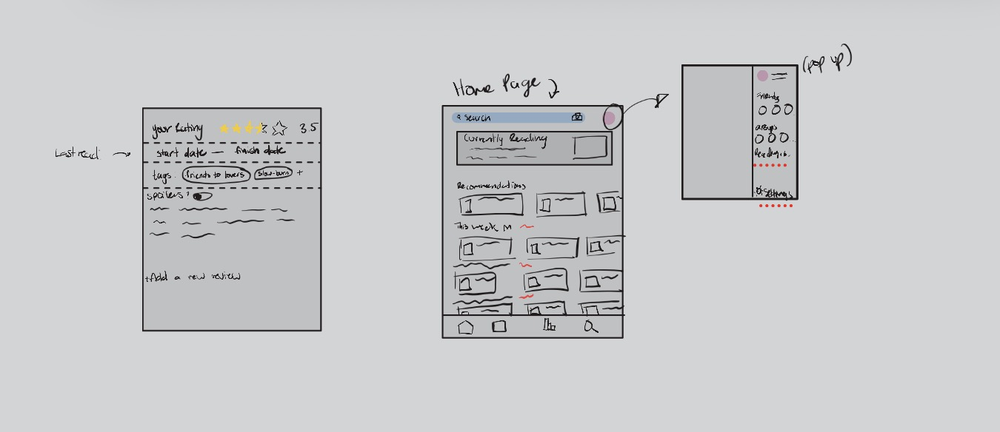

The Problem
The problem I wanted to solve was the interface issues I’ve experienced, as well as the ones I’ve heard other users talk about. I felt like these could be addressed through a redesign in Figma.
Research
For my research, I looked through different forums and pages to see what problems people had with the app and its design. From there, I made a list of potential areas to improve—whether they were strictly interface issues or not.
- Implement half stars
- More mobile friendly design
- Change goal setting ability
- Change goal setting ability, not just number of books
- Add dnf option for all books
Design/Plan
Using screenshots from the mobile app, I created a kind of mind map where I highlighted the spots where those previously mentioned annoyances were the most noticeable.
From that mind map, I sketched out basic visuals of the pages that needed the most adjustment.

The key features of this design were:
- The “Currently Reading” block on the home page
- The pop-up profile sidebar
- Genre-focused sections on the home page
- The feature to add a new review to a book
Prototype 1
For my first prototype, I used my sketched visuals to build the application interface. I did this using Figma tools such as auto-layout, components, and assets.


Feedback and Evaluation
The feedback I received for Prototype 1 included:
- Touch targets for the “want to read” button are too small
- There’s no clear colour theme throughout
- The bottom navigation isn’t cohesive with the rest of the design
- There isn’t enough contrast between colours, which could make it difficult for visually impaired users
- The search bar doesn’t have enough padding
- It looks too thin
- The “Currently Reading” section is missing the book title and author
- Consider removing the profile side panel and moving that into the bottom navigation
- Or decluttering it
- Consider combining the “Books” and “Stats” pages
- Make it clearer which page the user is currently on
- The spacing at the top could be reduced
After evaluating the feedback, I made a list of changes I could apply:
- Improve button accessibility
- Increase touch target size and add padding around the icon
- Choose a primary, secondary, and accent colour
- Adjust icon sizes on the bottom navigation bar so they match the overall visual style
- Darken text or lighten backgrounds to improve contrast
- Thicken the search bar so it better fits with the rest of the page
- Add the book title and author to the “Currently Reading” section
- Highlight the bottom navigation icon based on the current page, or add a page indicator at the top
- Reduce the extra empty space at the top